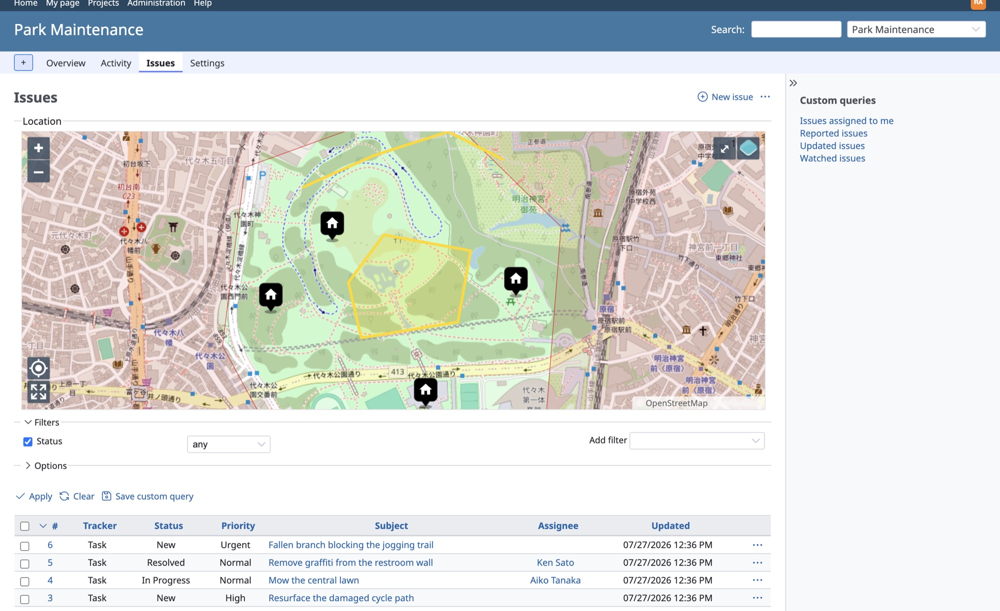
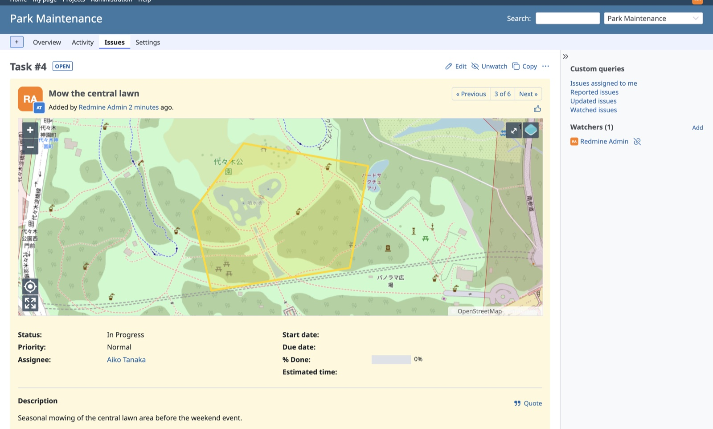
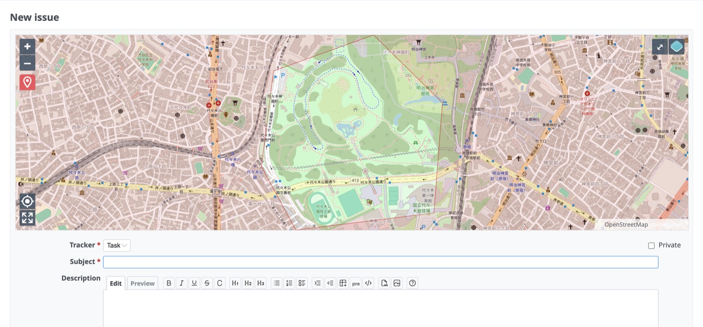
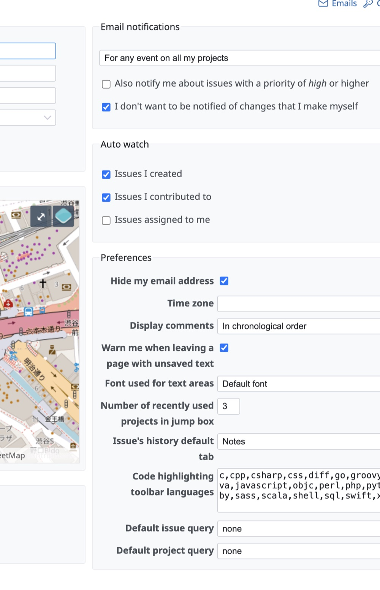

Geometry on issues
Attach points, lines or polygons to issues, projects and users. Draw directly on the map or import existing geometry.
Open source Redmine plugins
The Geo-Task-Tracker (GTT) plugin adds maps, geometry and spatial search to Redmine. Locate issues as points, lines or polygons, see them on a map, and filter them by where they are.

Everything stays plain Redmine: trackers, workflows, permissions and notifications work exactly as before. GTT adds the "where".
Attach points, lines or polygons to issues, projects and users. Draw directly on the map or import existing geometry.
Issue lists, issue details, project overviews and user profiles all get interactive OpenLayers maps that reflect your filters.
Filter issues by map extent or by distance from a location, sort by distance, and show a distance column in the unit you prefer.
Users with a stored location can automatically watch new issues within a chosen distance and get standard Redmine notifications. New in 7.1.
Administrators manage map layers for OSM, XYZ, WMS, WMTS and vector tile sources, and projects pick the layers they need.
The Redmine REST API is extended with GeoJSON geometry and spatial filters, ready for integrations and field data apps.
Issue pages show the geometry in context, next to the familiar Redmine attributes, watchers and history. Points, lines and polygons are all first-class citizens.

The new issue form opens with a map and drawing tools. Click to set a point, draw a line or sketch an area, then fill in the rest like any other Redmine issue.

Users can store their own location and opt in to automatically watch new issues within a chosen distance. Notifications arrive through the normal Redmine channels.

GTT is modular: start with the core plugin and add what your workflow needs.
The Geo-Task-Tracker plugin: maps, geometry, spatial filters and the extended REST API.
Print issues with maps as PDF, using Mapfish Print templates.
Connect Redmine to FIWARE: use GTT as an NGSI context provider and consumer.
Use the SMASH digital field mapping app for mobile data collection with GTT.
Generate Meshtastic channel configuration to bring off-grid devices into your workflow.
Work with GTT issues directly in QGIS through the extended REST API.
GTT requires Redmine with PostgreSQL/PostGIS. Each release ships a prebuilt archive, so no Node toolchain is needed on the server.
createdb -U postgres -O redmine redmine
psql -U postgres -d redmine -c "CREATE EXTENSION postgis;"cd /path/to/redmine/plugins
curl -LO https://github.com/gtt-project/redmine_gtt/releases/download/v7.1.0/redmine_gtt-v7.1.0.tar.gz
tar -xzf redmine_gtt-v7.1.0.tar.gzbundle install
bundle exec rake redmine:plugins:migrate RAILS_ENV=productionJuly 2026
Auto-watch nearby issues, configurable distance units, a Map settings admin entry and documented spatial REST API filters.
July 2026
Redmine 7.0 support, automatic geo gem resolution per Rails version, and a refreshed frontend toolchain.
Community
Ask questions, share how you use GTT and help shape what comes next in the GitHub Discussions of the project.